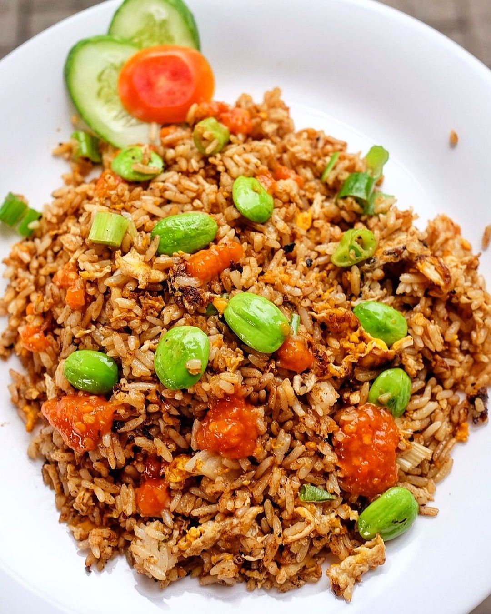

Nasi Goreng Pete

- 2 piring nasi putih
- 2 butir telur ayam, dikocok lepas
- 2 papan pete
- 1/2 sendok teh penyedap rasa
- 1/4 sendok teh lada bubuk
- Garam secukupnya
- 2 sendok makan kecap manis
- Minyak goreng secukupnya untuk menumis
- 5 buah cabai merah
- 8 buah cabai rawit merah, pedasnya sesuai selera
- 5 buah bawang merah
- 3 siung bawang putih
- Irisan mentimun secukupnya
- Irisan buah tomat secukupnya
- Kerupuk secukupnya
Bahan Bumbu Halus
Bahan Pelengkap